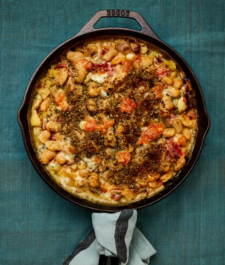

Creamy leeks and butter beans with za’atar breadcrumbs

This works just as well without the ham, if you prefer to leave it out. It’s a meal in itself, perhaps with a green salad alongside, and also works as a side for roast chicken, particularly when made without the ham. Either way, meet your new go-to autumn comfort traybake.
For the cream mixture
Heat the oven to 220C (200C fan)/425F/gas 7.
Put the leeks, shallots, garlic and oil in a shallow 30cm ovenproof pan, toss with a teaspoon of salt and a good grind of black pepper, then roast uncovered for 25 minutes, stirring once halfway through, until soft and lightly charred in places.
Meanwhile, put all the ingredients for the cream mixture bar the reserved mozzarella in a medium bowl, add the 200ml butter bean liquid and mix well.
Take the leek pan out of the oven, then turn up the heat to very high – 240C (220C fan)/475F/gas 9. Use a spoon to smoosh and squash the garlic cloves in the leek pan, then pour in the cream mixture and stir in. Scatter over first the ham hock and then the butter beans.
In a small bowl, mix the breadcrumbs, za’atar, the extra tablespoon of oil and a pinch of salt, then scatter this on top of the butter beans. Dot the reserved 50g of mozzarella over the top, then bake uncovered for 25 minutes more, until the cheese is golden and bubbling furiously. Set aside to rest for five minutes, then serve hot.